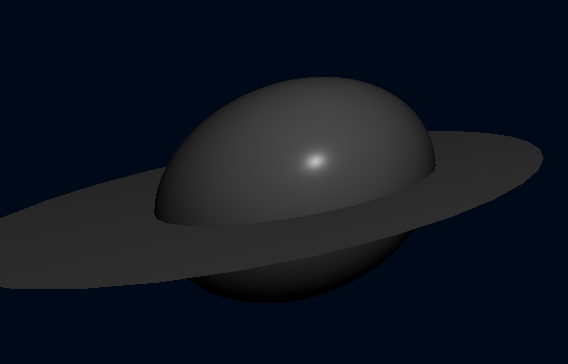
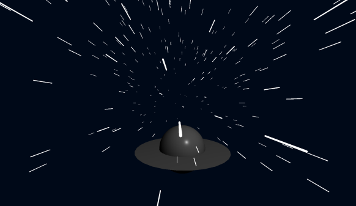
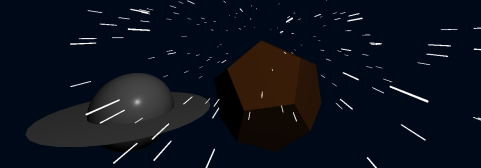

Dans cet exercice final, vous allez devoir poser les bases d'un jeu vidéo en 3D, dans lequel le joueur doit piloter un vaisseau spatial en évitant les astéroïdes. Le jeu ne sera pas complètement fonctionnel à la fin de cet exercice, mais la base des éléments graphiques sera présente.
Le joueur va piloter un vaisseau alien typique, composé d'une sphère (SphereGeometry) et d'un anneau (RingGeometry). Il devra être gris, se refléter à la lumière et évoluer dans un univers bleu foncé. Voici un exemple de vaisseau attendu :
En vous aidant de vos nouvelles connaissances et de la documentation de three.js, créez toutes les composantes d'une scène, puis ajoutez-y un vaisseau similaire à celui au-dessus. Attention : par défaut, les RingGeometry ne sont visibles que d'un côté, il est conseillé de les faire tourner avec un angle de 270 degrés pour qu'ils apparaissent comme sur l'exemple.
Afin de faciliter les prochaines étapes, l'anneau doit bouger en même temps que la sphère.
N'oubliez pas de placer une lumière pour que le vaisseau soit visible, sinon il apparaîtra entièrement noir.
Voici le code nécessaire pour reproduire l'exemple :
See the Pen Untitled by OpenSpirit (@OpenSpirit) on CodePen.
Il est temps d'animer le vaisseau. Pour cela, voici une classe JavaScript permettant de gérer les commandes utilisateur :
See the Pen Untitled by OpenSpirit (@OpenSpirit) on CodePen.
Pour l'utiliser, il faut créer une instance de la classe UFOInput et utiliser la méthode getCurrentInput, qui retourne LEFT si le joueur appuie sur la flèche de gauche, RIGHT s'il appuie sur la flèche de droite, et null si aucune des deux touches n'est appuyée.
Utilisez cette classe pour déplacer le vaisseau dans la direction choisie par l'utilisateur. Le vaisseau ne pourra se déplacer qu'horizontalement.
Il va falloir créer une render loop et vérifier la touche appuyée à chaque frame.
Pour clarifier le code, il est préférable de créer une fonction qui va s'occuper de bouger le vaisseau :
See the Pen Untitled by OpenSpirit (@OpenSpirit) on CodePen.
Il suffit ensuite d'instancier la classe UFOInput, puis de créer une render loop pour y appeler la fonction moveShip avant le rendu :
See the Pen Untitled by OpenSpirit (@OpenSpirit) on CodePen.
Pour le moment, le vaisseau a l'air de faire du surplace. Pour ajouter un effet de vitesse, créez des « étoiles », c'est-à-dire des cylindres se déplaçant vers la caméra :
Pour cela, vous allez devoir faire apparaître des cylindres à des positions aléatoires et les faire avancer sur l'axe z dans une zone de 10x10. Pour donner un effet de profondeur, la coordonnée de départ sur l'axe des z devra être reculée de 10. Voici une fonction permettant de gérer un nombre aléatoire entre 0 et 10 :
See the Pen Untitled by OpenSpirit (@OpenSpirit) on CodePen.
Les cylindres doivent être blancs et ne doivent pas refléter la lumière. Une fois qu'une étoile a suffisamment avancé et qu'elle passe hors champ, il faudra la replacer à une nouvelle coordonnée aléatoire pour donner l'illusion que le vaisseau ne s’arrête jamais. Pour que la galaxie soit peuplée, insérez 500 étoiles dans l'univers.
Attention, contrairement à l'exercice précédent sur les gouttes d'eau, il ne faudra pas récupérer tous les éléments de la scène pour les faire avancer, mais seulement les étoiles. Pour cela, il faudra stocker les étoiles dans un tableau.
La première étape est de créer une fonction qui va placer une étoile à son point de départ aléatoire, mais reculé de 10 sur l'axe des z :
See the Pen Untitled by OpenSpirit (@OpenSpirit) on CodePen.
Il faut ensuite créer les étoiles et les stocker dans un tableau afin d'y avoir accès plus tard :
See the Pen Untitled by OpenSpirit (@OpenSpirit) on CodePen.
Enfin, il faut créer la fonction qui va faire avancer toutes les étoiles, et vérifier leur position. Si leur position sur l'axe des z dépasse la limite passée en paramètre, alors on les replace. Cette limite sera la coordonnée z de la caméra.
See the Pen Untitled by OpenSpirit (@OpenSpirit) on CodePen.
Il ne reste plus qu'à appeler cette fonction dans la render loop, en lui donnant les coordonnées de la caméra en limite d'affichage :
See the Pen Untitled by OpenSpirit (@OpenSpirit) on CodePen.
Pour finir, rajoutons un astéroïde que le vaisseau devra éviter. Cet astéroïde sera représenté par un DodecahedronGeometry de couleur marron qui réagit à la lumière. Il devra se déplacer vers la caméra, de la même manière que les étoiles, mais en tournant sur lui-même. Il ne doit y avoir qu'un seul météore, qui sera replacé une fois hors champ.
Le vaisseau ne pouvant se déplacer qu'horizontalement, l'astéroïde devra apparaître sur la même coordonnée y que le vaisseau. De plus, pour que le joueur puisse avoir le temps de réagir, le météore devra apparaître à la coordonnée -40 et se rapprocher de la caméra sur l'axe des z. Sa coordonnée x, elle, doit être aléatoire.
Comme pour les étoiles, il faut une fonction permettant de placer l’astéroïde. Cette fonction doit prendre en compte la position du vaisseau :
See the Pen Untitled by OpenSpirit (@OpenSpirit) on CodePen.
On crée le météore en lui attribuant une position aléatoire :
See the Pen Untitled by OpenSpirit (@OpenSpirit) on CodePen.
On crée ensuite la méthode lui permettant de se déplacer, avec un effet de rotation :
See the Pen Untitled by OpenSpirit (@OpenSpirit) on CodePen.
Enfin, on appelle la fonction dans la render loop :
See the Pen Untitled by OpenSpirit (@OpenSpirit) on CodePen.
Le code complet et final du jeu est le suivant (en ayant placé la classe UFOInput dans un fichier UFOInput.js) :
See the Pen Untitled by OpenSpirit (@OpenSpirit) on CodePen.